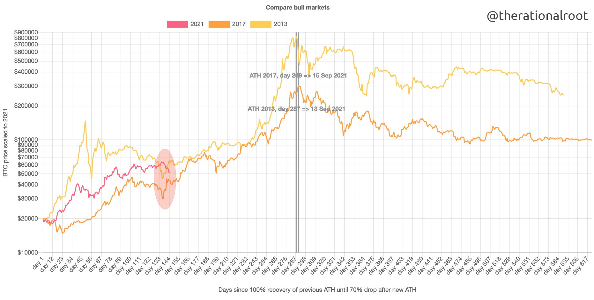
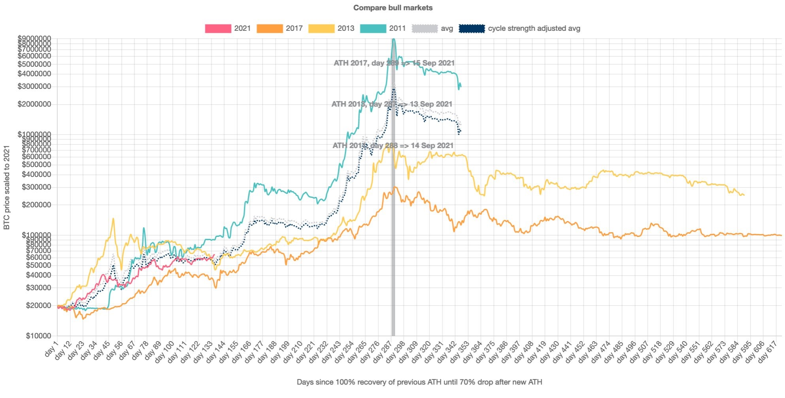
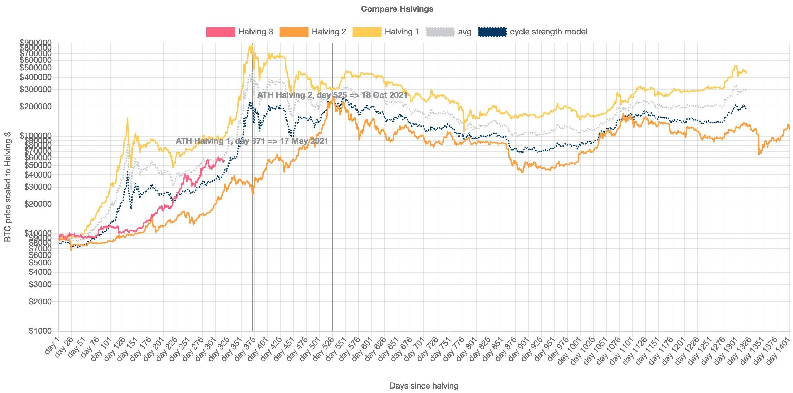
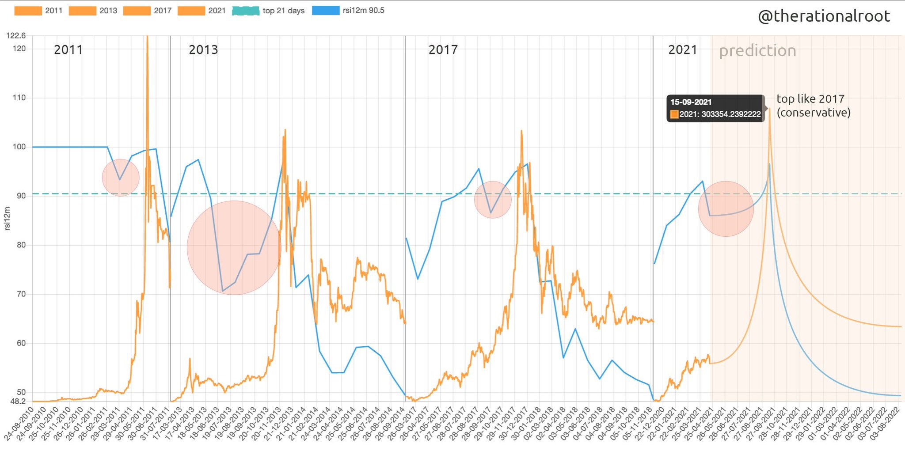

TLDR: mid-September, $300,000
Checklist
- Top Cap ≈ Market Cap chart
- MVRV > 4 chart
- S2F deflection > 3, but noisy chart
- 0.875 × Delta Cap ≈ Realised Cap chart.
- HODL waves - 45% moved in the last 6 months chart
- 12 Month RSI > 90 chart
- 3-month coin days destroyed - check glassnodes most recent email and STH and LTH chart
Summary
- S2F model suggests a peak around the beginning of 2021Q4, in the region of $300,000.
- The rainbow chart seems to broadly agree with S2F.
- If the age-adjusted 3-month coin days destroyed goes above 550,000 then get ready to sell.
- Willy Woos “double top” chart suggests a peak around $400,000.
- RationalRoot’s comparison of bull runs suggests a market top around 14 September and a maximum price around $2,000,000 [sic].
- RationalRoot’s comparison of 12 months RSI suggests that the market top is reached shortly after a 12 month RSI exceeds 90. This seems less reliable than the above points
- Jurrien Timmer suggests a peak price around $100,000 if price shoots up unexpectedly quickly. I expect the market top to be significantly higher.
- $100k will be a massive psychological level. If the price does increase to this level before approximately July then the optimal sell price would therefore not be exactly $100,000.
- Market top is expected around September 2021 at the earliest.
- The behaviour of the market will change as its participants change. There hasn’t been a bull run with significant institutional investors before.
- Sell using a cost averaging strategy.
Awareness
- Buy when everyone is selling, sell when everyone is buying. Be brave when there is fear, if there is no fear then its about to get very messy.
- If everyone is super confident that prices are definitely going to go up, something bad is about to happen. A lack of uncertainty is a big warning bell.
- 14 September, $300,000.
Threshold Values
MVRV
- MVRV > 3 → Local top
- MVRV > 4 → Macro top
- MVRV has historically been one of the best on-chain predictors of market tops and bottoms.
- The ratio of Market Value to Realised Value is calculated by dividing Bitcoin’s market cap by its realised cap.
- chart
Top Cap
- Top Cap is 35 x Average Cap
- Market top when Top Cap is equal to Market Cap.
Delta Cap
- Delta cap is Average Cap subtracted from Realised Cap.
- When Delta Cap is almost Realised Cap, it’s a market top.
- When Delta cap touches Average Cap, it’s a market bottom.
- Market Top when Delta cap is within 20%15% of Realised Cap
S2F Deflection
- Get key ratio values
- If s2F deflection > 3, but its noisy
HODL Waves
- >45% of supply has been moved in the last 180 days (6 months) → Sell
- >70% of supply has been held over 180 days → Buy
- chart - hover the cursor over todays date and add up all the age brackets from 24hr to 3-6 months
12 month RSI > 90
- 14 month RSI > 95 → Sell
- 12 month RSI > 90 → Sell
- Noisy - defer to other metrics.
SOPR
- Use 7 day average.
- 1.04 → Sell
- 0.97 → Buy
- Noisy - defer to other metrics.
Realised Cap > NVT Cap
- Realised Cap should be lower than NVT Cap.
- Sell when Realised Cap almost exceeds NVT cap
- See chart below, there have been false positives.
- Realised Cap is lower than NVT cap during a bull market only.
- Noisy, could be a miss.
Charts
Stock to Flow Model
{kind=link}
Rainbow Model
{kind=link}
Top Cap
{kind=link}
Realised Cap, NVT
{kind=link}
Delta Cap
{kind=link}
3 month coin days destroyed
{kind=link}
Double top
{kind=link}
Similarities to previous bull runs
Version 1: 
{kind=link}
Version 2: 
{kind=link}
Halving model: 
{kind=link}
12 Month RSI comparison 
{kind=link}
Bitcoin price history
{kind=link}
Lowest price forward model
{kind=link}
Key metrics and terms
Average Cap
The “forever” moving average of market cap. It is the cumulative sum total of daily market cap values divided by the age of the market in days.
Top Cap
Average Cap multipled by 35.
NVT Cap
A valuation using monetray velocity. Checkout CoinMetrics for more info.
MVRV
The ratio of Market Value to Realised Value is calculated by dividing Bitcoin’s market cap by its realised cap.
Realised Cap
The sum of the products of each UTXO and the market price of Bitcoin when the UTXO was generated.
Market Cap
The price of the most recent Bitcoin transaction multipled by the number of Bitcoin
UTXO
Unspent Transaction Outputs. These are kind of like unspent coins. If you have 1.5 BTC then you might have bought 2 and sold 0.5. The total value of UTXOs in your wallet will be 1.5.
SOPR
The Spent Output Profit Ratio is a measure of the average profit or loss on a coin. Is a coin is moved when the price is higher than when it was received the SOPR increases, if a coin is moved when the price is lower than when the coin was received then SOPR decreases.
It won’t be accurate for individual coins but in aggregate it gives an idea of whether coins are being sold at a loss or for profit.
Market participants who have owned BTC for 3 months behave differently to those that have held BTC for 3 years. A more experienced investor will likely make more measured and less rash decisions.
By segregating the UTXOs according to age you can compare old coins and new coins, experienced and inexperienced investors (in aggregate).
Weak hands will sell before stronger hands, and when market price decrease it’s useful to know aggregate age data for the coins being sold. If coins are moving from young wallets then the selling is likely much less significant than if coins are being moved onto exchanges from old wallets.
aSOPR
The Adjusted Spent Output Profit Ratio is the same as SOPR but it ignores coins less than 1 hour old.
If profits are taken by old coins, aSOPR trends higher. It will trend lower when older (and therefore profitable) coins remain dormant.
The higher aSOPR is, the more profit has been taken off the table.
When aSOPR is less than 1, spent coints are moved at an aggregate loss.
URPD
UTXO Realised Price Distribution - If a lot of coins have moved within a particular price band, it is likely that there is strong price support and resistance at this price.
This would be truer and more reliable in a mature market. Because the market for Bitcoin is expanding so rapidly and the price is so volatile, the attitudes and expectations of market participants is also much more malleable than in traditional finance. For example, what was considered a very high price 12 months ago would be considered a disaster today.
RSI
The Relative Strength Index is borrowed directly from traditional finance. You can calculate it over different time periods.
Miner Net Position
Miner Net Position shows the degree to which, on aggregate, Bitcoin miners are profiting from the coins they’ve generated from mining. Miners are expected to be among the most bullish of all market participants, and therefore it is notable when they start moving coins from their mining wallets into exchange wallets.
Stock-to-Flow
A stock to flow model is used to measure the scarcity of a commodity. It’s a calculation based on the ratio of existing supply and how much is being produced. The higher the ratio, the longer it will take for supply to meet existing demand.
Gold has a stock to flow ratio of 66, which means it would take 66 years at the current rate of production to produce the amount of gold currently in circulation. Silver has a S2F ratio of 74. BTC has a S2F of about 50.
Background
Over the past 8 years, Bitcoin has gone through phases of rapid price increase followed by periods of rapid decrease. The price has been driven by increasing market size and a decreasing rate of issuance, and has been so volatile (compared to traditional finance) that “1 month in cryptocurrency markets is like 1 year in traditional markets”. However volatility is decreasing and we are seeing lower highs and higher lows during each subsequent market cycle.
The single biggest factor driving multi-year market cycles appears to be the decreasing rate of supply increase (the issuance rate). The last 3 halvings1 seem to have provoked the last 3 bull cycles. We are in the third bull cycle now (April 2021) and I fully expect it to be followed by a bear cycle.
As an amateur investor, I want to buy low and sell high. I’d like to time the top and bottom of the market with reasonable accuracy, just like everyone else. But I’m aware that my methods are less nuanced than professional traders and analysts - I have access to less data than them and I’m not willing to put in as much effort as they are. I’m happy to do this Pareto style - I’ll give it 20% of my maximum effort and I’ll be happy with 80% of an ideal result2.
This is a review of what I consider to be the best sources of metrics and analysis that I’ve come across. All the resources used in this article are attributed to the original author and have been made freely available on Twitter. I hope its OK for me to repost them here, if it’s not then let me know and I’ll edit the post.
Hopefully helpful links
This article assumes some familiarity with blockchains and financial markets. Some more general articles on this site are:
Analysts
These insights, metrics and charts are the work of the following people and organisations:
- Every 210,000 blocks, the number of bitcoin awarded to the miner for successfully adding a block is halved. The last halving occurred in May 2020 and the rate of issuance halved from 12.5 BTC/block to 6.25 BTC/block ↩
- I realise this probably isn’t, strictly, what Mr. Pareto was thinking when he published his research. I hope you get my intention. ↩